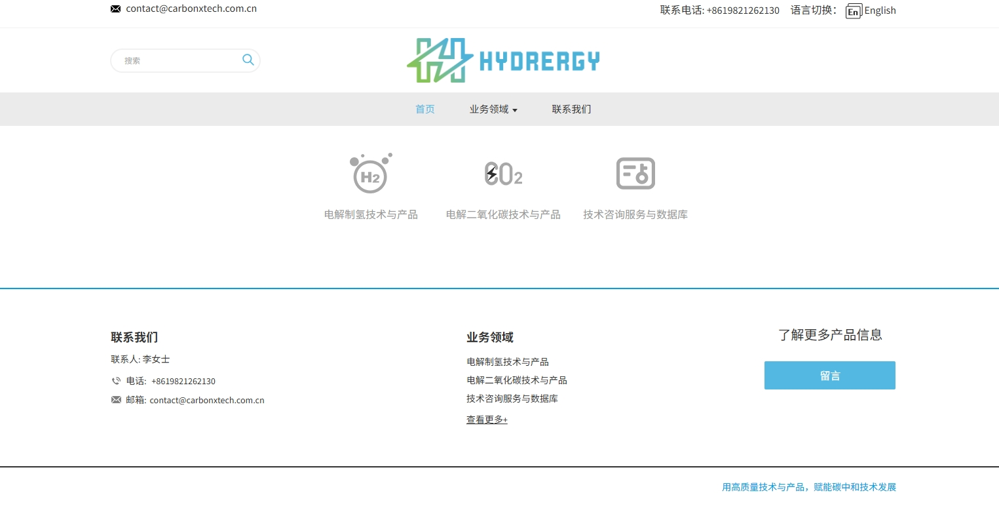

电解水制氢设备
我们提供高效、可靠的电解水制氢设备，助力清洁能源发展。
技术优势
- 高效率： 采用先进的电解技术，确保氢气生产效率最大化。
- 低能耗： 优化系统设计，显著降低能源消耗，运行成本更低。
- 模块化设计： 设备采用模块化结构，方便安装、扩展和维护。
- 环保安全： 生产过程无污染，符合最高安全标准。
应用场景
我们的电解水制氢设备广泛应用于：
- 工业氢气供应
- 加氢站建设
- 可再生能源存储
- 燃料电池供氢
成功案例
我们已成功为多家企业提供了电解水制氢解决方案，帮助客户实现了清洁能源转型和可持续发展目标。
